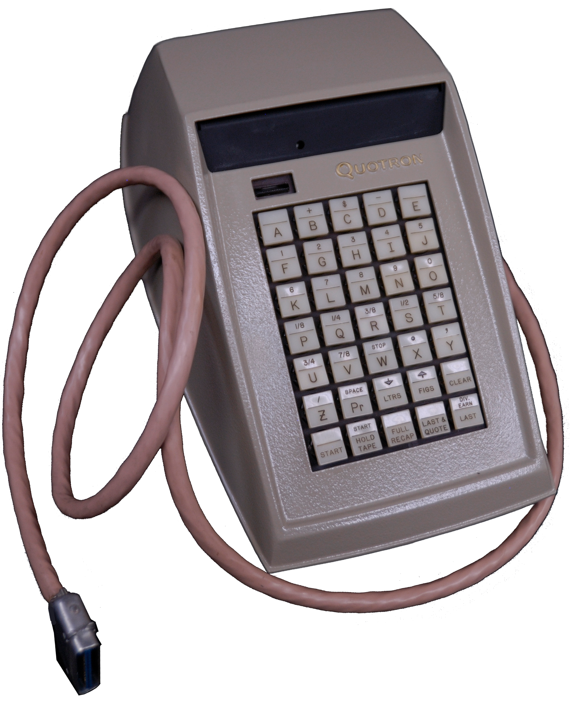
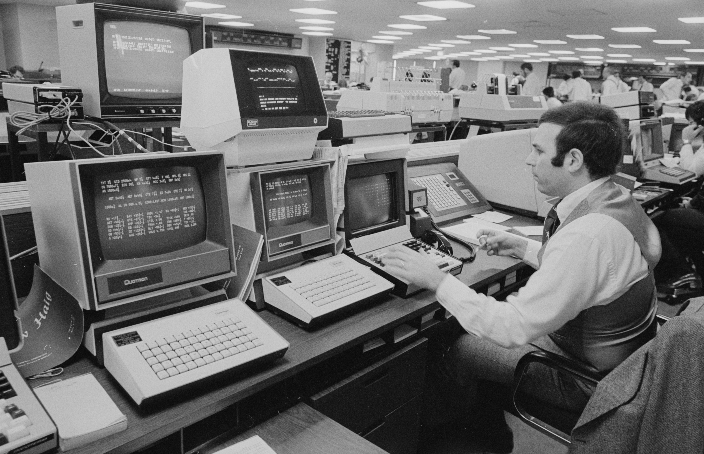
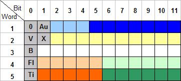
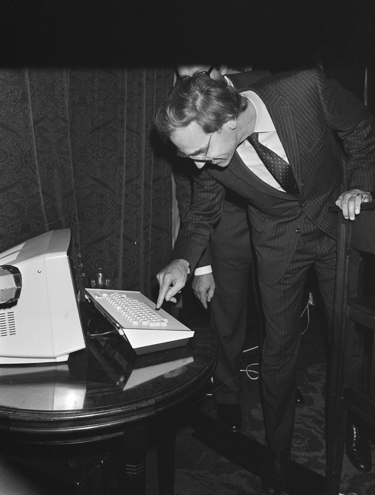

Quotron II
Wall Street's dedicated quote terminal: type a ticker, press a labeled field key, read the green glass

Overview
Quotron was a Los Angeles company that in 1960 became the first financial-data technology company to deliver stock market quotes to an electronic screen rather than printed ticker tape. Developed by Scantlin Electronics, owned by entrepreneur John Scantlin, the Quotron offered brokers and money managers up-to-the-minute prices and other information about securities. By the 1980s, the Quotron II desk unit was the terminal on Wall Street trading floors: a dedicated, non-QWERTY keyboard with alphabetic ticker-symbol keys, a numeric pad, and labeled function keys for data fields (LAST, BID, ASK, VOL, HIGH, LOW, OPEN, CLOSE, NEWS, EXCH), all driving a green-text-on-black CRT.
The interaction model is the point. The operator does not browse: they type a one-to-four-letter ticker and hit a labeled field key, and the request travels over dedicated lines to Quotron's central computer, which returns the answer on the green-phosphor screen. No cursor, no mouse — a key-driven retrieval language, the ancestor of the Bloomberg terminal's amber-terminal command grammar.
Citicorp bought Quotron in 1986. At the time Quotron was renting 100,000 terminals, 60 percent of the 1986 financial-data market. After the acquisition, Merrill Lynch, its largest client, declined to renew and instead invested in a competing startup named Bloomberg. Quotron was slow to move from dedicated terminals to personal computers, and by 1994 had only 35,000 terminals; Reuters paid more than $100 million to purchase the ailing company, and Quotron became Reuters' trading-floor terminal until superseded by the Reuters 3000 Xtra. The Quotron screen is famously the terminal used by Bud Fox and Gordon Gekko in the 1987 film Wall Street.
Deep dive
The Quotron II desk unit had no operating system you could point at. The interface was a custom keyboard divided into functional zones: alphabetic ticker-symbol keys, a numeric pad, and a bank of labeled field keys (LAST, BID, ASK, VOL, HIGH, LOW, OPEN, CLOSE, NEWS, etc.) plus modifiers like EXCH (NYSE/AMEX/OTC) and PAGE/CLR. To ask 'what is the last price of IBM?', you typed IBM then hit LAST. The machine was a client to a central mainframe; the physical keyboard WAS the retrieval grammar — a deliberately impoverished, extremely fast, eyes-on-the-numbers interface, the opposite of the icon-and-menu systems of the same era.
Quotron screens were green text on black, updating from a central computer over dedicated lines. The color was not decoration: brokers worked in dim trading rooms where the glow of the quote screen was the center of attention, and green-on-black had superior legibility at a glance. When Bloomberg launched its professional terminal for bond traders, it chose amber on black — a direct visual echo of the Quotron paradigm, and proof of how thoroughly the dedicated quote terminal defined the category.
Quotron's terminal was designed as a sealed appliance: rental terminals, central computers, dedicated phone lines. This worked brilliantly in the 1970s and early 80s but became a liability as PCs invaded trading floors. By 1994 Quotron had 35,000 terminals versus 80,000 for ADP and 25,000 for ILX. The story is a classic of the era: a perfect dedicated-interface machine, undone by the general-purpose computer.
The 1987 film Wall Street used Quotron screens for Bud Fox and Gordon Gekko. In the museum's collection, Quotron II sits alongside Minitel (consumer videotex), the Famicom Network System (home finance), and Bildschirmtext (metered videotex) as a corner of the pre-Internet information-terminal story: the professional terminal that defined the trading floor.
Team & pioneers
- Scantlin Electronics. Developer of the original Quotron, the first electronic market-data terminal (1960); owned by entrepreneur John Scantlin.
- Quotron Systems. Los Angeles company that rented quote terminals to brokers and money managers.
- Citicorp. Acquired Quotron in 1986; rented 100,000 terminals, 60% of the 1986 financial-data market.
- Reuters Holdings. Purchased Quotron in 1994 for more than $100 million; Quotron became Reuters' trading-floor terminal.
Media


